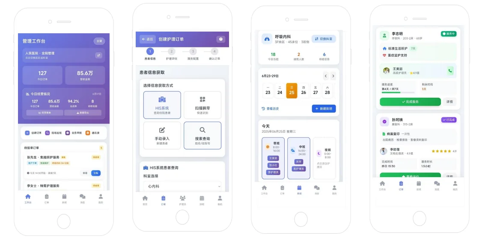

产品概述
免陪照护服务管理系统面向医院免陪照护试点建设，覆盖“下单—派单—服务—质控—结算—对账”的全流程数字化管理，提升照护服务效率与质量，支撑政策合规落地与医院精细化运营。
适用对象
- 患者：陪护全流程线上化，费用透明、状态可查
- 医疗护理员：培训考核体系 + 双考核机制（患者评分 + 护士抽查）促进专业成长
- 护理部/管理部门：实时数据看板与质控闭环，支撑标准化管理
- 医院：政策合规落地，提升患者满意度与智慧服务水平
系统优势
- 流程自动化：HIS 自动推送医嘱，费用匹配政府指导价，减少人工干预误差
- 资源智能调度：按护理等级与技能匹配，动态优化排班，降低人力闲置
- 等保合规：全程加密，核心信息存储在院内内网，满足安全合规要求
- 数据主权：服务记录与收费数据沉淀在医院，更换陪护公司数据不丢失
- 财务透明：自动生成服务量、费用、满意度报表，支持按月对账结算
- 质量监管：科室自查、公司抽查、护理部终审，多级质控可追溯
系统架构（四端协同）
- 患者/用户端（小程序）：服务预约、自理评估、在线支付、投诉反馈、状态查询
- 护理员端（小程序）：接单服务、护理记录、签到打卡、培训考核与统计
- 班长/主管端（APP）：派单、排班、交班管理、护理员管理与数据分析
- 后台管理端（PC）：订单/用户、质量监控、服务协议、财务管理、数据报表；对接 HIS/NIS
典型流程
- 医院收费模式：医生评估 → 开具医嘱（推送系统）→ 主管与患者确认方案/费用 → 费用回写 HIS → 护理员按计划服务 → 质量抽查 → 月度结算对账
- 第三方收费模式：患者小程序自主下单/评估推荐 → 主管确认方案/费用 → 在线支付 → 护理员服务 → 更换/结算
系统特点
- 多途径下单：医嘱下单、患者自主下单、评估推荐下单
- 多元化服务覆盖：住院照护、陪诊服务、餐饮服务等个性化服务扩展
- 全角色协同：患者、护士长/主管、护理员、后台四端闭环管理
- AI 辅助运营：智能排班优化、需求预测、成本效益分析与多维报表
| 对接能力 | 支持对接 HIS/NIS，实现医嘱下单与费用回写；支持与第三方陪护公司结算 |
|---|
| 部署方式 | 院内部署 / 私有化部署 |
|---|